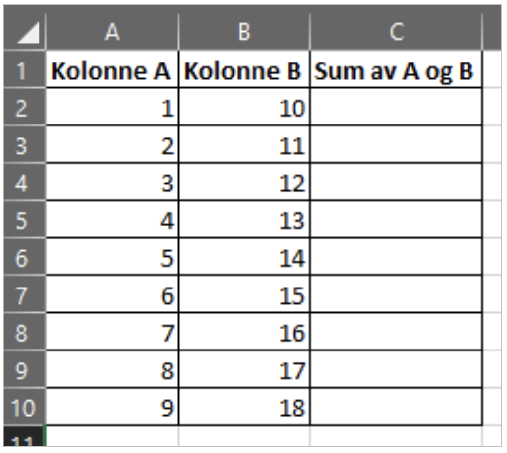

Sett 1
Oppgave 1: Instruksjoner
Utforsk 2 ulike KI-tjenestene og øv på ulike teknikker for å gi instruksjoner. Diskuter gjerne med en kollega hvordan og hva de ulike tjeneste fungerer til.
Oppgave 2 - Idegenerering
Spør et KI-verktøy om å generere 10 ideer til hvordan KI kan brukes i din arbeidshverdag. Spesifiser tydelig hva slags oppgaver du gjør og hvilke verktøy du har tilgjengelig.
Oppgave 3 - NotebookLM
Last opp et dokument i NotebookLM. Velg et dokument som er relevant for jobben din, eller et dokument du er interessert i. Lag et tankekart og en studieveiledning, og still spørsmål om dokumentets innhold.
Oppgave 4 - Opprettelse av maler
Tenk på et arbeidsområde hvor du lager lignende dokumenter eller tekster ofte. Bruk et av de tilgjengelige KI-verktøyene til å lage et forslag til en mal du kan bruke i arbeidet ditt.
Oppgave 5 - KI-assistent
Sett opp din helt egne KI-assistent i GPT UiO.
- Velg én oppgave du gjør ofte (f.eks. svare på henvendelser, lage agenda, oppsummere møter).
- Lag en “standard-instruksjon” som du kan bruke igjen, som beskriver: - Din rolle og arbeidsfelt - Typisk målgruppe - Ønsket stil og format
- Test instruksjonen på et eksempel fra jobben.
- Juster instruksjonen til du har en versjon du kan bruke som mal fremover.
Oppgave 6 - Bildegenering
Du skal kalle inn til et møte med valgfritt tema. Be Copilot om å generere et relevant bilde du kan bruke i møteinnkallelsen.
Oppgave 7 - Powerpoint
Be Copilot lage en utkast til en powerpoint-presentasjon om et valgfritt tema.
Oppgave 8 - Dataanalyse
[TODO] Finn frem en excel fil med endel data fordelt i kolonner og rader. Bruk et KI-verktøy til å…
(Lenken går til en liten excel-fil med 15 kolonner og 12 rader. Bruk et KI-verktøy til å pivotere og aggregere dataen slik at tabellen viser bokført beløp per koststed.)
Oppgave 9 - Enkel programmering
Vi ønsker at excel skal summere tallene i to kolonner automatisk.
{kind=link}

For å få til dette har vi skrevet en kort makro:
Sub LeggTilTall()
Dim sisteRad As Long
Dim i As Long
sisteRad = Cells(Rows.Count, 1).End(xlUp).Row
For i = 2 To sisteRad ' Antar at første rad er header
Cells(i, 3).Value = Cells(i, 1).Value + Cells(i, 1).Value
Next i
End Sub
Dessverre inneholder denne kodesnutten en feil, og summene vi får stemmer ikke med forventningene.
- Oppgave 1: Få GPT til å forklare hva som er feil med kodesnutten, og hvorfor den ikke gir summen av kolonne A og B.
- Oppgave 2: Få GPT til å skrive en riktig versjon av koden som faktisk gir summen av kolonne A og B.
Oppgaven kan løses utelukkende med kodesnutten over og UiOGPT, men for de som eventuelt er ekstra nysgjerrige ligger det en excel-fil med den beskrevne funksjonaliteten om man vil teste det selv her: Enkel koding med KI - .xlsm
Kilder / Ressurser
Takk til ØVA som har delt sine KI_oppgaver med oss!